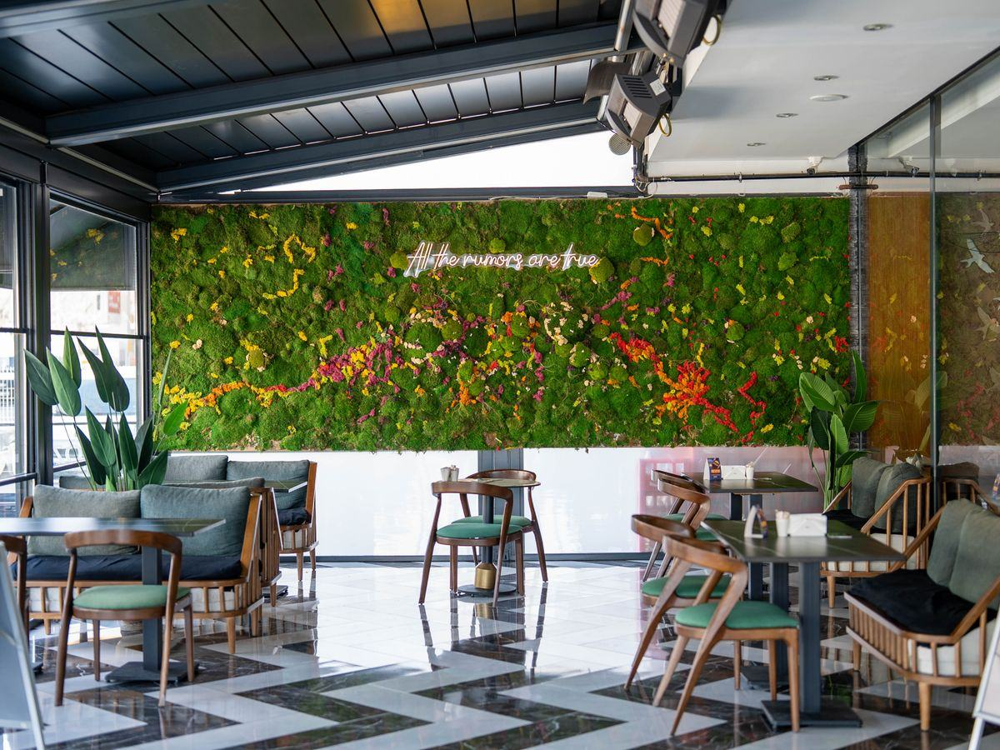

Quand les murs sont déjà pris et que le sol doit rester libre, c'est en hauteur que se gagne l'effet. Un plafond végétal transforme un volume entier, adoucit l'acoustique et n'occupe pas un centimètre au sol — en stabilisé pour le vrai végétal, en artificiel pour les zones inaccessibles.

Un ciel de feuillage n'est pas un mur couché : le végétal travaille à l'envers, suspendu, et tout se joue sur l'ossature qui le porte et sur la sécurité de la fixation. Trois familles de systèmes couvrent la quasi-totalité des projets.
De vrais végétaux stabilisés — mousse plate, mousse boule, fougères et feuillages — montés tête en bas sur des panneaux légers accrochés à une ossature. Le rendu et le toucher sont ceux d'un mur stabilisé, avec la profondeur en plus vue du dessous. Réservé à l'intérieur sec, comme le mur végétal stabilisé.
Feuillages synthétiques de qualité, traités anti-UV et le plus souvent classés au feu, montés en nappe dense. C'est la solution des grandes hauteurs inaccessibles, des vérandas lumineuses et des extérieurs abrités, là où le stabilisé ne tiendrait pas. À rapprocher du mur végétal artificiel.
Plutôt que de couvrir tout le plafond, on suspend des modules — nuages, disques, îlots ou cannes de feuillage — répartis dans le volume. C'est plus léger, moins coûteux, et souvent plus spectaculaire qu'une couverture pleine, en particulier au-dessus d'un comptoir ou d'un espace de réception.
Tout repose sur une ossature métallique fixée en dalle béton, ou sur les suspentes d'un faux-plafond dont on vérifie la charge admissible. Le plénum entre la dalle et le plafond fini permet de dissimuler câbles et attaches. En établissement recevant du public (ERP), matériaux et fixations doivent respecter le classement au feu exigé.
Un plafond végétal résout un problème que le mur ne résout pas : végétaliser un lieu où chaque mètre carré de sol et chaque paroi comptent déjà. Il joue sur le volume, pas sur la surface.
Ni bac, ni jardinière, ni mur épais à réserver. Tout le végétal passe au-dessus des têtes, ce qui libère la totalité de la surface pour les tables, les rayonnages ou la circulation. C'est l'argument décisif dans les lieux denses.
Vu du dessous, un ciel de feuillage cadre le regard et abaisse visuellement une hauteur excessive, sans l'écraser. Il donne à un hall ou à une salle une signature immédiate, bien plus enveloppante qu'un simple mur en fond de pièce.
Un feuillage dense suspendu casse les réflexions et absorbe une part des aigus, ce qui atténue la réverbération d'un grand volume. Couplé à des panneaux absorbants dissimulés, il devient un vrai traitement, comme sur un mur végétal acoustique.
Dernier avantage, et non le moindre : en stabilisé comme en artificiel, un plafond végétal ne demande ni arrosage, ni éclairage horticole, ni évacuation d'eau. On s'affranchit ainsi de toute la plomberie qui serait, en hauteur et au-dessus du public, la contrainte majeure d'un plafond vivant.
Les deux se posent en suspension et ne demandent pas d'eau. Le choix se fait sur l'exposition et sur l'accès pour l'entretien, deux critères qui pèsent plus lourd au plafond qu'au mur.
À privilégier en intérieur sec, à l'abri du soleil direct, et sur une hauteur qui reste accessible une à deux fois par an pour un dépoussiérage léger. Le toucher et la nuance des teintes sont ceux d'une vraie plante : c'est ce qui fait la différence au-dessus d'un accueil ou d'une table.
À privilégier dès qu'il y a une grande hauteur inaccessible, une lumière naturelle forte, une véranda ou un extérieur abrité. Traité anti-UV, il ne décolore pas et se nettoie sans précaution. C'est aussi le choix des très grandes surfaces où le budget doit rester maîtrisé.
En pratique, beaucoup de projets combinent les deux : du stabilisé dans les zones basses et visibles de près, de l'artificiel dans les parties hautes ou éclairées. Si l'arbitrage n'est pas tranché, notre guide quel mur végétal choisir pose les mêmes questions, transposables au plafond.
Fourchette de référence : 500 à 1 000 € HT le m² posé en stabilisé suspendu, un peu moins en artificiel. Un plafond coûte généralement davantage qu'un mur de même surface : il faut y ajouter l'ossature portante et la pose en hauteur.
| Type de plafond | Usage type | Prix indicatif HT posé |
|---|---|---|
| Feuillage artificiel, nappe simple | Grande surface, grande hauteur | 350 – 550 €/m² |
| Feuillage artificiel dense traité anti-UV | Véranda, extérieur abrité | 500 – 650 €/m² |
| Stabilisé suspendu, composition standard | Restaurant, boutique, accueil | 500 – 750 €/m² |
| Stabilisé dense sur mesure | Hall d'hôtel, projet signature | 750 – 1 000 €/m² |
| Nuages et îlots suspendus (à l'unité) | Au-dessus d'un comptoir ou d'un salon | 400 – 900 € / module |
| Ossature et pose en hauteur | Nacelle ou échafaudage selon accès | Incluse, sauf accès complexe |
Le point commun de ces espaces : un grand volume, un sol qui doit rester dégagé, et l'envie d'une signature forte dès l'entrée.
Un ciel de feuillage au-dessus de la réception installe une ambiance dès le seuil et habille une hauteur souvent difficile à meubler. Voir aussi nos solutions pour hôtels et restaurants.
Suspendu au-dessus des tables, il enveloppe la salle et casse la réverbération du service. L'effet est immédiat sur le confort sonore comme sur les photos partagées par les clients.
Au-dessus d'un comptoir ou d'un corner, un nuage végétal attire le regard vers un point précis sans empiéter sur le linéaire de vente, toujours précieux en surface commerciale.
Des îlots suspendus au-dessus d'un espace de pause ou d'une salle de réunion zonent l'open space et adoucissent l'acoustique, dans la continuité d'un projet de végétalisation de bureaux.
Poser du végétal en hauteur ajoute des contraintes que le mur n'a pas. Aucune n'est rédhibitoire, mais toutes se vérifient avant de commander.
Même léger — 3 à 8 kg par m² —, l'ensemble doit être repris par une ossature fixée en dalle ou par des suspentes vérifiées. On ne raccroche jamais un plafond végétal sur des plaques de faux-plafond seules : c'est le support porteur qui commande le projet.
Comme au mur, le stabilisé craint l'humidité : au-delà d'environ 70 % d'hygrométrie, les mousses gonflent puis noircissent. Cuisine ouverte, piscine ou local mal ventilé imposent alors de basculer sur de l'artificiel.
Le seul entretien est le retrait de rares poussières, mais il se fait en hauteur. Si l'accès nécessite une nacelle, mieux vaut de l'artificiel, qui espace fortement les interventions, ou prévoir cette logistique dès le départ.
Une précision honnête pour finir : un plafond stabilisé ou artificiel est un décor, non une plante vivante. Il ne purifie pas l'air et ne régule pas l'hygrométrie. Son bénéfice est esthétique et, selon la densité, partiellement acoustique — c'est précisément ce qu'on lui demande en hauteur.
Trois questions reviennent dans presque toutes les demandes que nous recevons sur les plafonds et ciels de feuillage.
Comptez de l'ordre de 7 500 à 15 000 € HT posé en stabilisé suspendu, selon la densité, moins en feuillage artificiel. La hauteur sous plafond et le mode d'accès pour la pose font varier le budget autant que la surface elle-même.
Rarement en totalité. La pose se fait par zones, souvent en horaires décalés dans un lieu ouvert au public. L'installateur partenaire adapte le phasage et le moyen d'accès — nacelle ou échafaudage roulant — au site.
Indiquez la surface, la hauteur sous plafond, la nature du support et le délai. Un installateur partenaire, spécialiste des plafonds végétaux, vous rappelle sous 24 h ouvrées avec un chiffrage. La mise en relation est gratuite et sans engagement.
Obtenir mon devis →Décrivez la surface, la hauteur et le support : un installateur partenaire vous rappelle avec un prix au m².
Demander mon devis gratuit